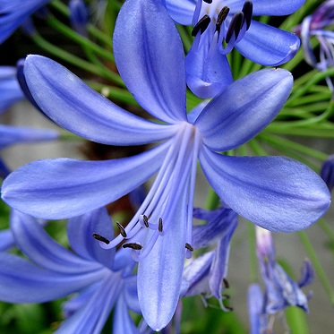
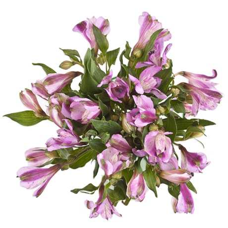
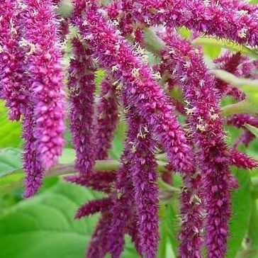
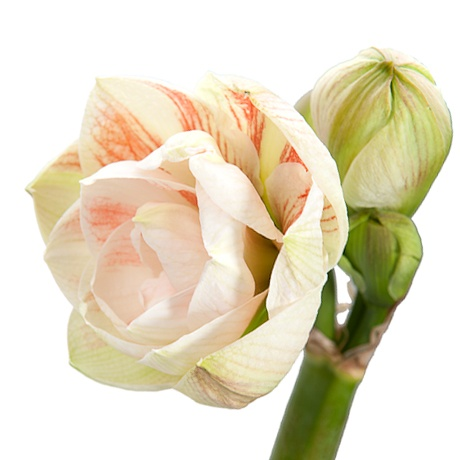

Агапантус
Растение относится к семейству лилейных, родиной же его считается Южная Африка. Именно поэтому растение называют не только агапантусом, но и африканской лилией. Официальное название произошло от сложения двух греческих слов – agape (переводится как «любовь») и anthos («цветок»). Внешне агапантус представляет собой растение, обладающее толстыми корнями и короткими корневищами. Листья собраны в розетки, характеризуются как прикорневые, ремневидные и линейные. Цветение агапантуса сопровождается мощным длинным цветоносом, доходящим до одного метра. На нем располагается довольно много насыщенных голубых, лилово-синеватых и белых цветков. Цветки крупные, отличаются вытянутой формой, собираются в соцветие-зонтик. У некоторых взрослых растений в соцветии может насчитываться порядка ста пятидесяти цветков, каждый из которых раскрывается постепенно. Благодаря этому цветение продолжается примерно шестьдесят дней. В числе полезных свойств агапантуса отмечают выделяемые в воздух фитонциды – они уничтожают вредные микробы даже эффективнее, чем чеснок. Находясь в домашних условиях, агапантус поглощает различные тяжелые металлы.
Альстромерия
Относится к семейству альстромериевых, родом из тропических и субтропических областей Южной Америки, названа в честь ботаника и путешественника Класа Альстромера, который еще в восемнадцатом веке привез ее семена в Европу. Сразу после этого в Испании начался ажиотаж вокруг альстромерии, ее стали скрещивать с другими растениями и выращивать в оранжереях. Продолжая рассказывать историю альстромерии, нельзя не упомянуть о ее особенном значении для индейцев: они почитали этот цветок, возводя в культ и специально выращивая. За счет этого альстромерию окружает магический ореол тайн и легенд. Альстромерия может сохранять свежесть больше трех недель. В это время все новые и новые бутоны продолжают раскрываться. При этом альстромерии характеризует почти абсолютное отсутствие запаха. Это позволяет использовать цветок в самых разных букетах. Традиционно альстромерия считается женским цветком, наличие ее в цветочных композициях придает им определенное очарование и элегантность. Цветки альстромерии не превышают пяти сантиметров в диаметре, представляют собой неплотные соцветия, формой похожи на орхидеи, лилии или азалии. Высоким цветоносам (до восьмидесяти сантиметров) необходимы подпорки. Цвет альстромерии существенно варьируется: лепестки могут быть как белыми, красными, голубыми, желтыми, розовыми, сиреневыми, так и с другими вкраплениями. Пик цветения альстромерии приходится на период с середины июня до середины августа.
Амарантус
С греческого языка название растения переводится как «неувядающий цветок». Объясняется оно тем, что амарантус, будучи высушенным, может держать форму порядка трех-четырех месяцев. По этой причине его часто сушат зимой и даже придумали своеобразное прозвище – «зимний друг людей». В России еще одним названием амарантуса считается «щирица». В числе других названий встречается «кошачий хвост», «бархатник» и «петушиные гребешки». История амарантуса началась столетия назад, когда его семена оказались в Европе. Местными жителями он был воспринят как декоративное растение, работать с ним в качестве кормовой или крупяной культуры начали лишь в восемнадцатом веке. Интересно, что эти сорта амаранта постоянно подвергались повторному опылению, теряли полезные свойства и негативно влияли на землю. Именно поэтому в нашей стране амарантус считался сорняком, как только появился, то есть со второй половины девятнадцатого вида.
Амариллис
Если говорить о внешнем виде, то листья характеризуются как линейно-языковидные, на высоких трубчатых стрелках в зонтике собраны большие цветы с приятным запахом. Ножки несколько изогнуты, что объясняется тяжестью цветов. Довольно часто крупные луковицы образуют одну-две цветочные стрелки, на каждой из которых отмечается до четырех цветов. Важно понимать, что традиционно родиной амариллиса считается Южная Африка, однако растения оттуда отличаются не только красотой, но и мелкими цветками и полным отсутствием какого бы то ни было запаха. Другие амариллисы, намного более распространенные, являются выведенными гибридами оригинального африканского растения и родственного ему гиппераструма. Ввиду этого в специализированных магазинах растение можно увидеть под любым из этих названий. Те виды амариллиса, которые выведены ботаниками, на сегодняшний день отличаются друг от друга: они имеют разную окраску, но почти все обладают крупными цветами колокольчатой формы. Цвет их варьируется от белоснежного до темно-пурпурного, а иногда и зеленого. Отмечаются виды с махровыми и явно проявленными полосатыми цветками.
